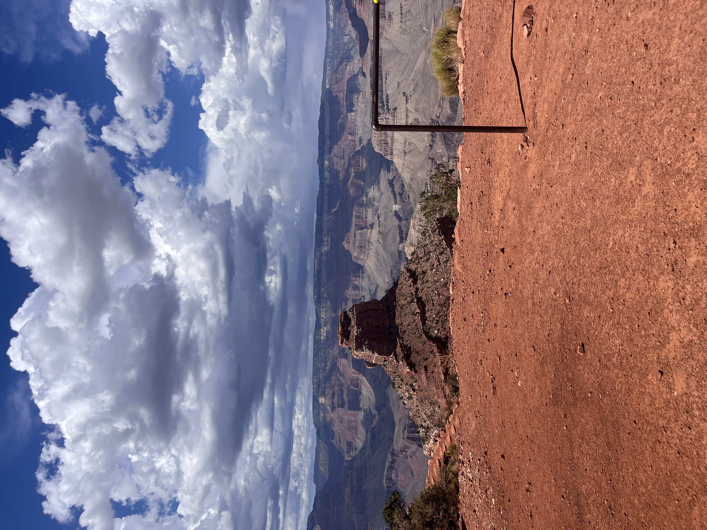

About
I'm a first-generation college student attending Mira Costa College. I plan to transfer to a four-year institution. Aside from being a student, I am also a student community member by being a resource lead for the Computer Science For Common Good Club on campus. Aside from CS, I enjoy hiking, biking, baking, video games, and exploring national parks.

Rest stop in the Grand Canyon

River in rural Oregon
My Experinces
CS 226 ZTC Intern
I’m an intern for the CS department at Mira Costa working with a team to redesign the current discrete structures (CS 226) course. To ensure it remains a zero textbook-cost class while also introducing an element of cultural relevance to a field that often doesn't cover it. This experience has so far involved me researching through open source material from textbooks, books, tutorials, and other media that will best serve future students. Equally important this internship has taught me how to reimagine a field to involve cultural and social relevance, while still having the main focus of teaching quality material.
Software Development Intern
Over the summer of 2024, I interned with a local company in San Diego called Chakra Tech. The company focused on developing solutions to turn air pollution or other forms of pollution back into polymers to produce recyclable plastics. However, the company had issues securing and organizing the data gathered from the various scientists. I was on a team that worked on a custom portal that would solve this issue. This was my first professional experience in the tech industry and it reinforced my idea of pursuing the CS field. I learned various new technologies such as GoLang, AWS, and Terraform. Aside from new technologies it also taught me how to collaborate effectively from a mostly online workspace. In the end, I was very grateful to have this experience and I hope I can continue building off of this experience.